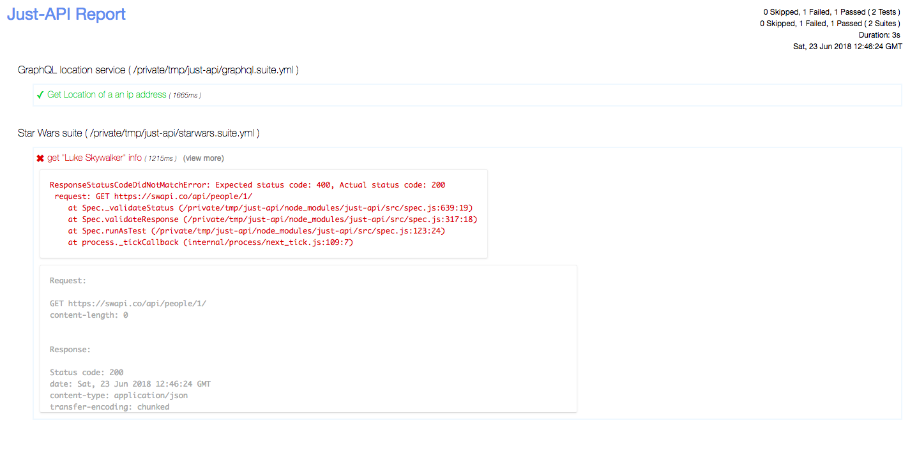

REST-EZ has several built-in reporters, json, specs, html etc.
When you need a HTML report, you can invoke rest-ez with the --reporter option
1link$./node_modules/.bin/rest-ez --reporter html

Notice that report has request, response details for the failed test
REST-EZ can generate reports in multiple formats.
When you need a HTML report and a JSON report too, you could do something like this
1link$./node_modules/.bin/rest-ez --reporter html,json
This way you can generate reports in multiple formats for the same run.
When built-in reporters do not provide the information you need, you can write a custom reporter and use it:
1link$./node_modules/.bin/rest-ez --reporter html,custom-reporter-module-name
or if the reporter is local js file
1link$./node_modules/.bin/rest-ez --reporter html,/absolute/path/to/js/file
Reporters in REST-EZ are JavaScript constructors. When instantiated, a reporter receives the test launcher object along with program options.
REST-EZ emits events on launcher object and suite object, So a custom reporter should listen to these events and implement reporting.
Following events are emitted on the launcher object
start
end
new suite (Indicates the start of a new suite)
And below events are emitted on each suite object
If you are looking to write a custom reporter, take a look at REST-EZ's JSON Reporter
REST-EZ accepts an additonal command line option --reporter-options that you can use to customize how and where reports are generated and saved.
You must pass a comma separated list of key and value pairs to this option as k=v,k2=v2,...
Following keys are supported currently.
jsonReportDir: Provide an existing directory path that is relative to REST-EZ node process's cwd. JSON report will be saved to this directory.
htmlReportDir: Provide an existing directory path that is relative to REST-EZ node process's cwd. HTML report will be saved to this directory.
jsonReportName: Provide a name for the JSON report file. JSON report will be saved with this name.
htmlReportName: Provide a name for the HTML report file. HTML report will be saved with this name.
logRequests: Tells REST-EZ to log HTTP request & response details in reports for failed tests. Omit this if you don't want to log details.
A sample REST-EZ invocation would look like:
1link$./node_modules/.bin/rest-ez --reporter html,json --reporter-options jsonReportDir=reports,jsonReportName=json-report,htmlReportDir=reports,htmlReportName=html-report,logRequests